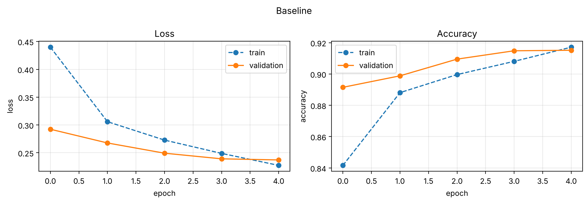
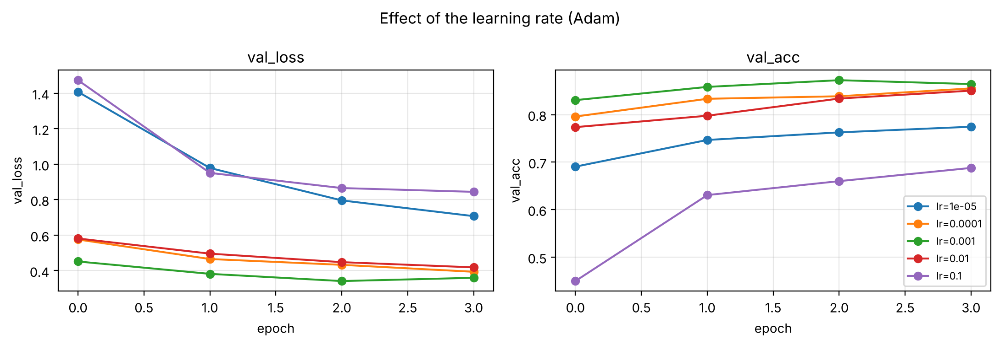
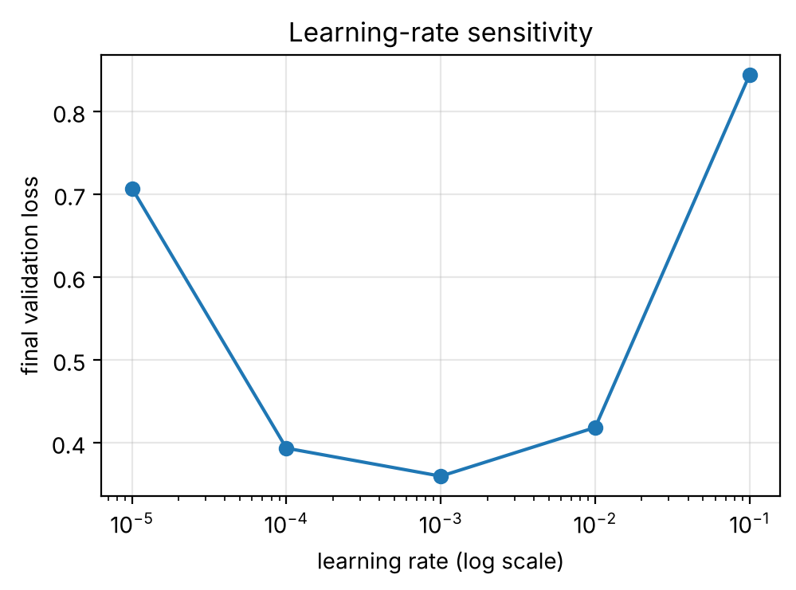
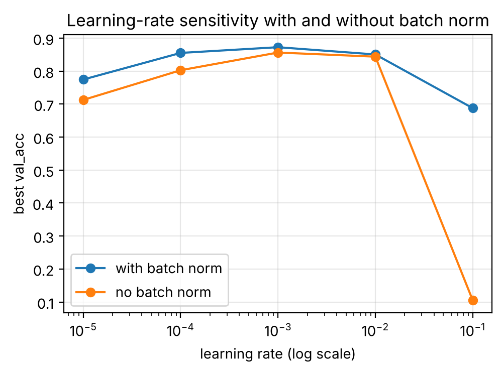

The Learning Rate Is Not a Magic Number#
Of all the settings you can change on a neural network, the learning rate is the one I end up caring about most. Set it too low and the model barely moves. Set it too high and it kind of loses its mind. I knew that much in theory. What I did not really get, until I ran the experiment myself, is that the “right” value keeps moving around on you.
So that is the question I wanted to answer for myself:
Is there one best learning rate for a small CNN on Fashion-MNIST? Or does the best value change the moment I swap the optimiser or touch the architecture?
The short version is that I never found one magic number. The best learning rate turned out to depend less on the problem and more on the rest of my setup. Below is how I got there.
If you remember one thing
The learning rate (people write it as \(\eta\), said “eta”) is just the size of
the step your model takes downhill on each update. In code it is the lr you
hand to torch.optim.Adam or torch.optim.SGD. That is genuinely all it is.
What the learning rate actually does#
Quick refresher first, because this is so much easier to picture than to state.
Training a network means shrinking a loss, which is one number that says how wrong the model currently is. The way we shrink it is gradient descent: at every step, nudge each weight \(\theta\) a little in the direction that lowers the loss fastest. That direction is the negative gradient, and the learning rate decides how big the nudge is.
I like to imagine the loss as a valley, with the weights as a ball I am trying to roll down to the bottom.
If the learning rate is too small, the ball takes tiny, cautious steps. It is going the right way, it just never actually arrives before I run out of patience (or epochs). The model is not broken. I simply did not give it enough room to get there.
If the learning rate is too big, the ball takes a running jump, sails clean over
the bottom of the valley, and smacks into the far wall. The loss bounces around,
stalls, or blows up into nan.
And if it is about right, the loss drops fast and then settles. Which is the dream.
The catch is that the right step size depends on the shape of that valley, and the shape changes with the optimiser, the architecture, even the data. That is the part I wanted to test.
How I set it up#
I built everything on top of the class framework: a small CNN trained on Fashion-MNIST with PyTorch Lightning. The full notebook is linked at the bottom if you want to rerun any of this.
Thing |
Value |
|---|---|
Dataset |
Fashion-MNIST (28×28 greyscale, 10 clothing classes) |
Training images |
A fixed 10,000-image subset, to keep runs short |
Validation images |
6,000 held-out images (10% of the full training set) |
Model |
2 conv blocks (32, 64 channels) plus a 128-unit dense layer, about 422k parameters |
Batch size |
64 |
Epochs |
4 |
Seed |
42 (fixes the weights, the data split and the shuffling) |
The validation set, those 6,000 images the model never trains on, is how I
compare runs. I only peek at the test set once, right at the very end. And the
one rule I held myself to: in each sweep, the only thing I change is the learning
rate. Everything else stays frozen. I spread the five values on a log scale, so
each one is 10 times the last (1e-5, 1e-4, 1e-3, and so on) instead of
evenly spaced. The reason is that learning rates work in relative terms: what
matters is the ratio between two values, not the gap between them. Going from
0.001 to 0.01 multiplies the step size by 10 and changes training completely,
while 0.051 to 0.060 is only about a 1.2 times change and barely does anything.
So powers of ten cover far more useful ground for the same number of runs.
lr_values = [1e-5, 1e-4, 1e-3, 1e-2, 1e-1]
lr_results = run_configs("lr", {f"lr={v:g}": {"lr": v} for v in lr_values})
Before any of the sweeps, I trained a plain baseline on the full dataset with
the default lr=1e-3, just so I had something healthy to compare against.


Fig. 1 The baseline (lr=1e-3, Adam, full data). Both losses fall and the gap between
train and validation stays small, which is what a well-behaved learning rate
looks like. Validation accuracy climbs from 89.2% to 91.5%.#
What happened#
With Adam, the sweet spot is 1e-3#
Below are the learning curves for all five rates. It helps to read them as curves, not just final scores, since the shape shows how each run got to where it ended up.


Fig. 2 Validation loss (left) and accuracy (right) per epoch, with Adam. Green
(1e-3) wins. Blue (1e-5) is still crawling upward when training runs out.
Purple (1e-1) jumps straight to a bad spot and more or less stays there.#
Learning rate |
Best validation accuracy |
Final validation loss |
|---|---|---|
|
77.5% |
0.707 |
|
85.5% |
0.394 |
|
87.3% |
0.360 |
|
85.1% |
0.418 |
|
68.8% |
0.844 |
Table 1. The learning-rate sweep with Adam. Accuracy peaks in the middle and drops off on both sides.
If I plot the final loss against the learning rate on a log axis, I get this clean little U. A sweet spot in the middle, a cliff on either side. Too small and too big are both bad, just for opposite reasons.


Fig. 3 The learning-rate “U”. Final validation loss bottoms out at 1e-3 and shoots
up if the rate is 100 times too small or 100 times too large.#
Swap in SGD and the sweet spot jumps#
This one surprised me. I ran the exact same sweep with plain SGD (momentum 0.9)
instead of Adam. If the best learning rate were just a property of the problem,
it would have stayed put at 1e-3. It did not.
Learning rate |
Adam |
SGD + momentum |
|---|---|---|
|
77.5% |
59.1% |
|
85.5% |
76.5% |
|
87.3% |
84.8% |
|
85.1% |
86.2% |
|
68.8% |
81.0% |
Table 2. Same sweep, two optimisers. Adam peaks at 1e-3, SGD peaks at 1e-2,
a full order of magnitude higher, and SGD handles the big 1e-1 far better.
Adam quietly rescales the step for every weight on its own, so it is happy at a
smaller nominal rate. SGD uses the raw gradient, so it needs bigger steps to
cover the same ground. And look at 1e-1: that rate already wrecked Adam (down
to 68.8%), but SGD is still cruising at 81.0%. So that learning rate I grabbed
off an Adam tutorial? It would have been a bad call for SGD.
Turn off batch norm and the whole thing gets jumpy#
Last one. I kept Adam but switched batch normalisation off. Batch norm rescales the activations inside the network, and one of its quiet side jobs is keeping training calm when the learning rate is a little off. This plot shows me what it was saving me from.


Fig. 4 Best validation accuracy against learning rate, with and without batch norm.
Without it (orange), lr=1e-1 collapses to 10.5%, basically random guessing on
10 classes, while the batch-norm model (blue) still limps along at 68.8%.#
With batch norm, accuracy across the five rates spans about 18 points. Without
it, that spread explodes to 75. The same 1e-1 that only bruised the batch-norm
model completely flatlines the plain one: 10.5% accuracy, which on ten classes
is no better than guessing, and the loss stuck at \(\ln 10 \approx 2.303\), the
number you land on when a model has learned nothing at all. Batch norm did not
change which rate was best (still 1e-3 either way). It just widened the range
of rates I could get away with.
So what do I make of all this#
Did any of it match the theory? For the most part, yes. The U-shape is the
textbook “too small, just right, too large” story drawn out in real numbers. The
collapse at 1e-1 is the “steps so big the model never settles” failure mode,
live. And the optimiser result fits too: Adam normalises its own step and SGD
does not, so a rate that suits one should not suit the other, and the best value
slid over by about the 10 times I would have guessed.
The part I keep coming back to is that this is what made me stop repeating “just
use 1e-3” without thinking. The best learning rate is tangled up with the
optimiser and the architecture, so I cannot tune it once and reuse that number
after changing everything around it.
Could this just be noise? Fair question, I worried about that too, so I checked. I reran the baseline with three different random seeds and the accuracies landed within about 1 point of each other. Every gap I called “big” up there (the 18-point spread, the 10 times optimiser shift, the 75-point blowup) is many times larger than that. So these are real effects, not luck.
I should be honest about the limits. I ran this small and cheap on purpose:
10,000 images, 4 epochs, so each run finishes in seconds. Great for spotting
trends, less great for exact winners. On the full 60,000-image
set, or with a longer budget, the best value could shift, since slower rates
often win once you give them more time. I also only tested powers of ten, so the
true best rate for SGD is somewhere between 1e-2 and 1e-1 and I did not pin
it down. And this is one architecture on one dataset, so please take the pattern
as the lesson, not the exact digits.
What I am taking away#
Tune the learning rate first, on a log scale. Try powers of ten, find the U, then zoom in around the winner. Most of my “why won’t this train” moments died right here.
A good learning rate does not travel. Change the optimiser and you retune: Adam wanted
1e-3, SGD wanted1e-2, same exact model.Batch norm buys forgiveness, not a free lunch. It widens the band of safe rates and saves you from total collapse, but it will not pick the rate for you.
Where this came from#
The notebook, if you want to rerun everything:
Hyperparameters.ipynbin this repo. Every figure above comes straight out of it.The class starter notebook on hyperparameters with PyTorch Lightning, which my framework is built on.
Ioffe, S. & Szegedy, C. (2015). Batch Normalization: Accelerating Deep Network Training by Reducing Internal Covariate Shift. arXiv:1502.03167
Kingma, D. & Ba, J. (2015). Adam: A Method for Stochastic Optimization. arXiv:1412.6980
Goodfellow, I., Bengio, Y. & Courville, A. (2016). Deep Learning, Chapter 8 (Optimization). deeplearningbook.org
Xiao, H., Rasul, K. & Vollgraf, R. (2017). Fashion-MNIST. arXiv:1708.07747